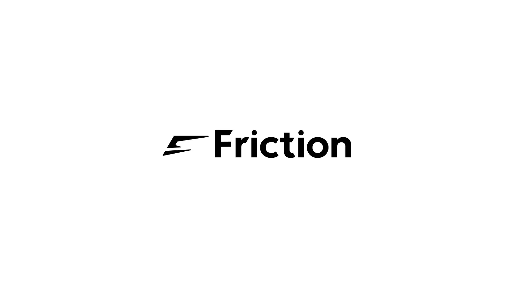
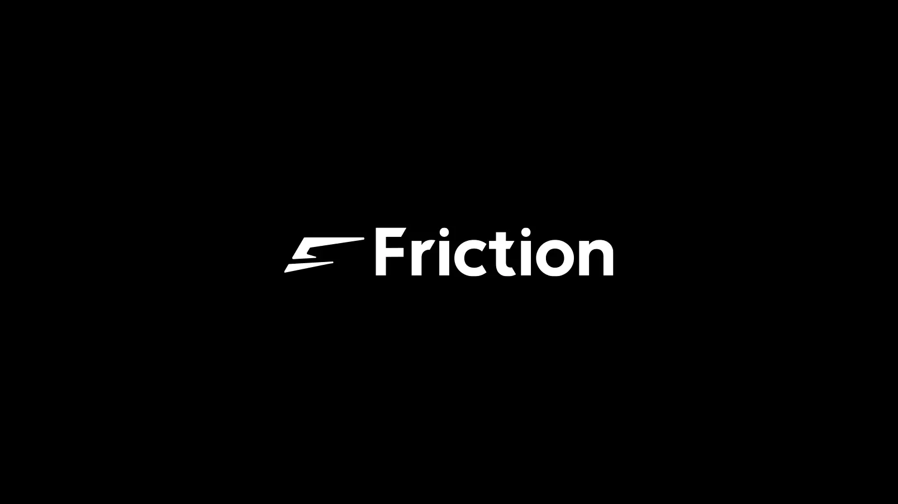
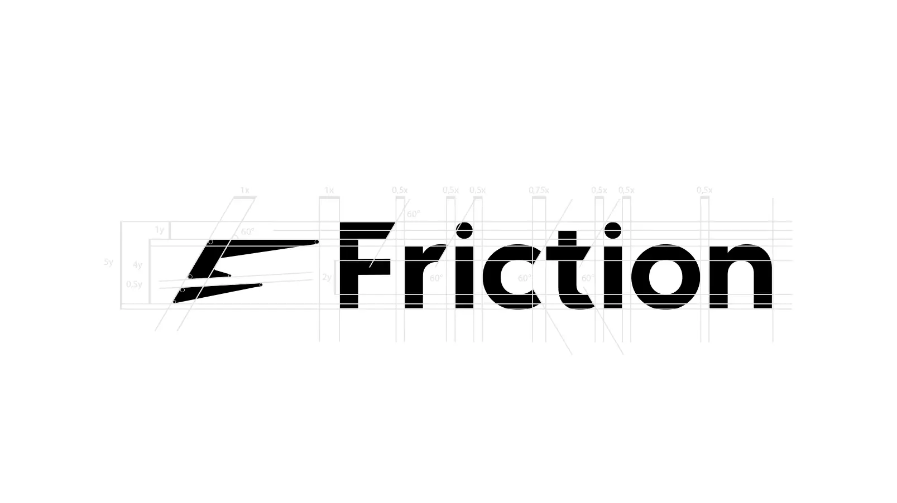
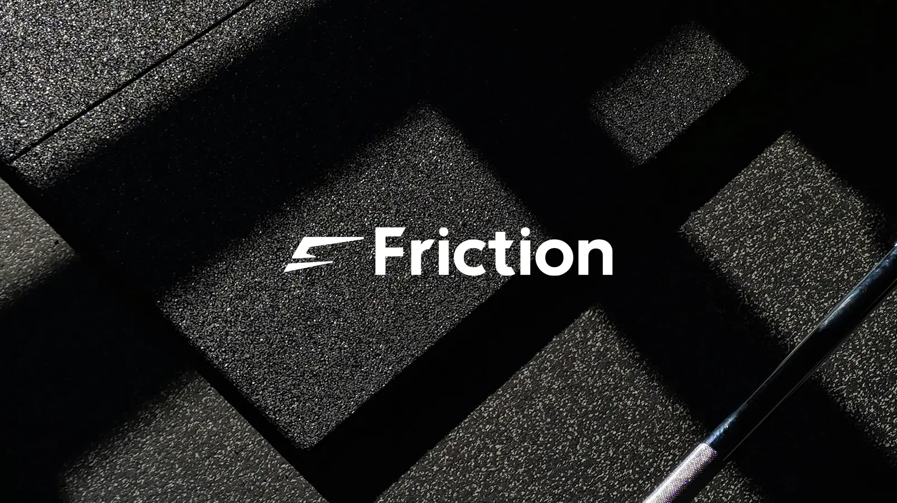
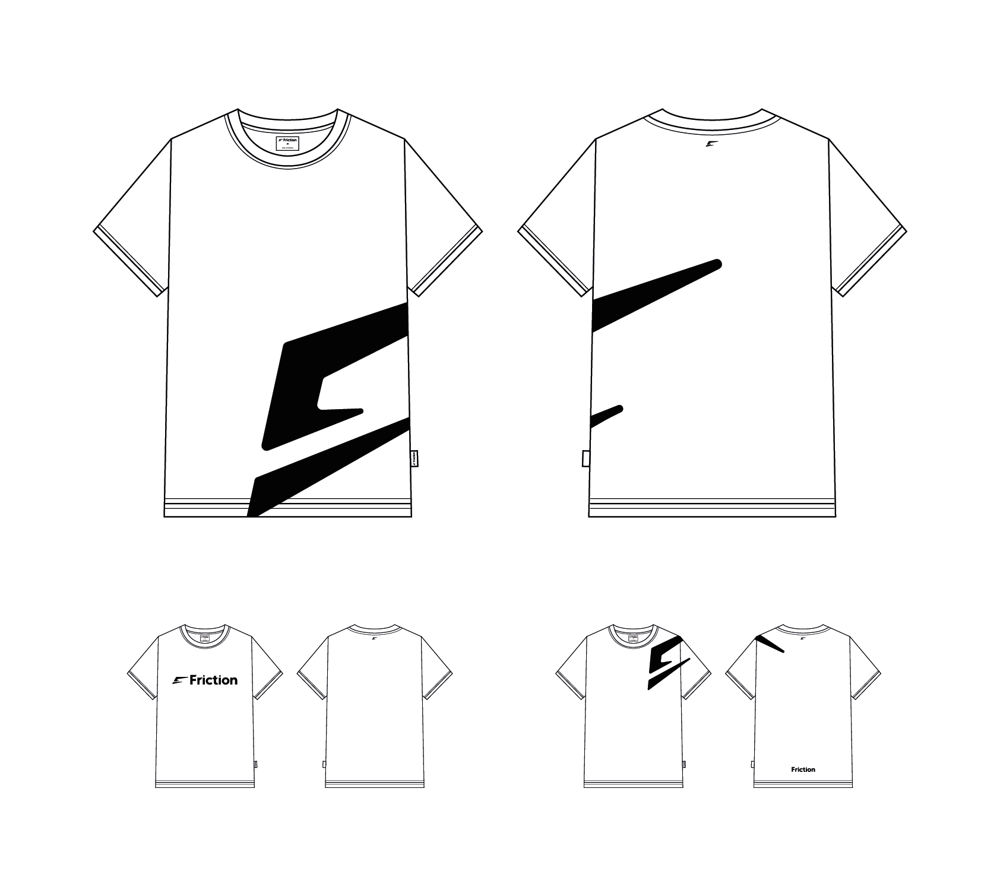
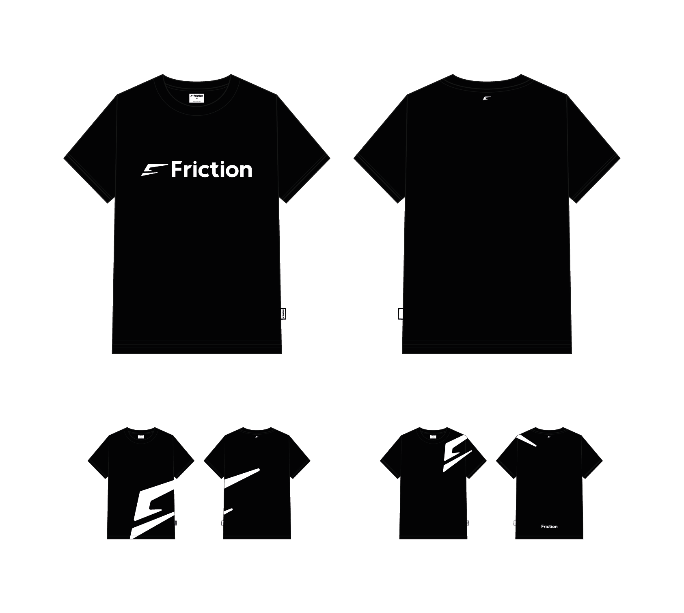

Friction — Identité Visuelle & Logo Chaussettes de Sport
Création complète du logotype et du design de marque pour Friction, spécialisée initialement dans les chaussettes de sport antidérapantes haute performance. Un projet axé sur la dynamique sportive, l'adhérence et l'innovation textile.
Logotype & Design de Marque
Le nom Friction évoque la prise d'appui, l'accroche et le transfert de puissance sans perte d'énergie. Le visuel repose sur un travail graphique dynamique associant lignes sportives et techniques pour refléter la haute performance du produit.



Traits de construction du logo Friction.


Tshirts modèles blancs Friction

Tshirts modèles noirs Friction
Parlons de votre projet